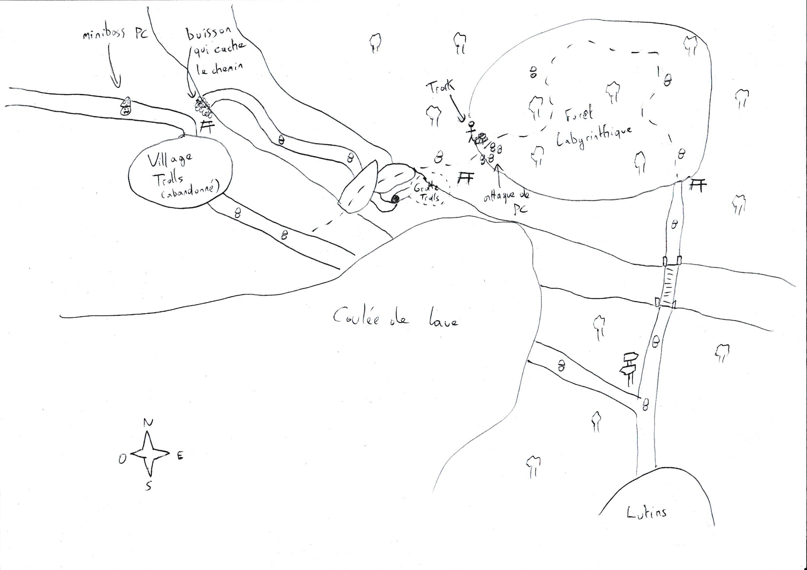

Capture d'écran du jeu

Dans le cadre de la sensibilisation au parcours de soins des grands brûlés, l'association Burns & Smiles a lancé le projet de créer un jeu éducatif visant à accompagner les victimes de brûlures (et notamment les jeunes enfants) avec l'aide d'Alten.
J'ai eu la chance de participer à ce projet dès ses prémices en tant que Game Designer puis Level Designer entre Juillet 2024 et Avril 2026, étant consultant chez Alten et en attente de mission à ce moment-là.
J'ai ainsi pu contribué à la conceptualisation du jeu et à son scénario, avant de devenir responsable du design des cartes de l'aventure une fois le concept et les outils définis.
Afin de ne pas mélanger les parties game et level design sur lesquelles j'ai travaillé, je ne vais parler ici que de la partie level design en évoquant la conception des cartes, la section sur le game design effectué en amont étant trouvable sur cette page.

Ce jeu étant destiné à un public jeune, et potentiellement avec une mobilité réduite et des traumatismes liés à leur accident, il est primordial que la difficulté générale soit très accessible afin que chaque joueur puisse compléter l'histoire.
De plus, l'histoire ayant été réfléchie et travaillée en amont en suivant les directives des soignants et psychologues quant à ce qu'il est possible de dire et montrer, il faudra donc bien évidemment que les cartes respectent le plus fidèlement possible le scénario et les ambiances décrites dans ce dernier.
De même, étant donné que cette même histoire joue un rôle crucial dans ce jeu, nous avons prévu une aventure plutôt linéaire, et avec peu d'exploration et de quêtes secondaires, afin d'éviter de perdre l'attention du joueur.

Avant d'entrer dans le vif de la production des cartes, j'ai d'abord commencé par dessiner et designer les cartes sur papier, afin de me permettre d'itérer rapidement sur le contenu, et de visualiser l'ensemble de l'univers du jeu pour que le tout reste cohérent au fil de l'aventure.
J'ai d'abord commencé par esquisser la carte globale du monde pour définir la taille, la forme et la géographie du jeu, avant d'entamer les croquis des cartes individuelles.
Sur chacune des cartes papier, j'ai donc défini le type d'environnement, puis ai placé les lieux importants, évènements et transitions permettant de donner le contexte du jeu, et de préparer une guideline pour la conception des cartes par la suite.
Aussi, afin de gérer le rythme du jeu et d'appuyer la notion de soin progressif du personnage, nous avons défini que les distances entre les différents villages seraient croissantes, et que chacune de ces routes serait découpée en 4 sections de taille équivalente, permettant au joueur de faire une pause et de restaurer la vie et l'endurance de son personnage à chacune des "zones de repos" intermédiaires.

chronologie du niveau ; enchaînement des objectifs ; événements ; transitions entre cartes ; intérêt pour garder une vision globale.
sélection de tilesets cohérents avec l’univers ; recherche d’immersion ; adaptation / création d’assets manquants ; contraintes liées au pixel art et à la lisibilité ; cohérence entre maps. passage du paper design à Tiled ; itérations sur layout ; ajustement des chemins, obstacles, zones de repos, points d’intérêt ; obtention d’une version définitive avant intégration.
ajout des collisions ; correction du sorting ; test en moteur ; ajout de Blueprints liés aux besoins du niveau ; objets interactifs ; validation gameplay.
builds ; tests internes ; corrections de collisions ; ajustements de lisibilité ; correction de sorting ; apprentissages sur le pipeline ; importance de tester tôt dans UE5.
workflow stabilisé ; maps intégrées ; pipeline reproductible ; meilleure capacité à produire les niveaux suivants.